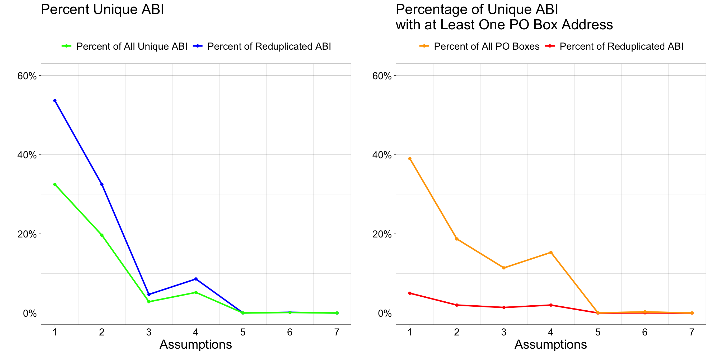

duplicated(church_wide$abi) %>% table()Review the Existing Process
Raw Data Dictionary
File name: church_wide_form_071723.csv
Number of rows: 2,601,599
Number of columns: 31
abi: American Business Identifier (ABI): The unique identifier for each business, used to associate addresses with a specific organization.
year_established: Indicates the year the business was first established.
state: The state associated with the address.
city: The city associated with the address.
zipcode: The five-digit ZIP code associated with the address.
address_line_1: The primary address line associated with the ABI entry.
primary_naics_code: This dataset combines the six-digit 2022 vintage North American Industry Classification System (NAICS) code and a two-digit proprietary code from Data Axle. The two-digit Data Axle code provides additional classification details, but this specific encoding was not supplied.
naics8_descriptions: All entries have NAICS = 813110, indicating they are classified as ‘Religious Organizations’, which includes churches, shrines, monasteries (except schools), synagogues, mosques, and temples. The two-digit Data Axle code provides additional classification details, but this specific encoding was not supplied.
longitude and latitude: Given as two columns. Provides the geolocation associated with the address listed in that row.
2001 to 2021: Create one column for each year from 2001 to 2021. Report
NAfor no response received and1for a response received.
Duplicate ABI’s
Since ABIs are used to uniquely identify entries, we need to ensure that there are no duplicates.
1 TRUE 1647336
2 FALSE 954263It appears that there may be several entries containing reduplicated information, impacting as many as 577727 unique ABIs. We examine each unique ABI that may potentially be reduplicated in the following ways:
- Confirm that the date binaries are mutually exclusive.
- Ensure that the zipcode remains consistent.
- Verify that the other metadata are consistent:
year_established,state,city,primary_naics_code, andnaics8_descriptions. - Check that the longitude and latitude are within acceptable error margins of each other.
Show the code
search_space <- church_wide$abi[duplicated(church_wide$abi)] %>% unique()
# Add a progress bar to show where the function is in the for loop.
pb = txtProgressBar(min = 0, max = length(search_space), style = 3)
result <- NULL
for(i in 1:length(search_space)) {
# Subset to show only the entries associated with one duplicated ABI.
subset <- church_wide[church_wide$abi %in% search_space[i], ]
# 1. Confirm the date binaries are mutually exclusive. A passing result will
# say "TRUE".
test_1 <- sapply(subset[, 11:31], function(x) sum(x, na.rm = TRUE)) %!in% c(0, 1) %>% any() == FALSE
# 2. Confirm the other metadata are consistent. This is excluding the
# longitude and latitude values.
# Same zip code? A passing result will say "TRUE".
test_2a <- subset$zipcode %>% unique() %>% length() == 1
# All duplicated entries metadata are same? A passing result will say "TRUE".
test_2b <- subset[, c("year_established", "state", "city", "primary_naics_code", "naics8_descriptions")] %>%
unique() %>% nrow() == 1
# 3. Confirm the longitude and latitude are within error of each other. A
# passing result will say "TRUE".
test_3 <- max(subset$longitude) - min(subset$longitude) < 1 & max(subset$latitude) - min(subset$latitude) < 1
result <- rbind(result, cbind(search_space[i], test_1, test_2a, test_2b, test_3))
# Print the for loop's progress.
setTxtProgressBar(pb, i)
}
# Commit result with reformatting.
result <- result %>% as.data.frame() %>%
`colnames<-`(c("abi", "Exclusive", "Zip_Same", "Metadata_Same", "LonLat_Similar"))
# Convert results from binary back to logical.
result[, -1] <- apply(result[, -1], 2, function(x) as.logical(x))
# Save the result.
write.csv(result, "Data/Results/KEEP LOCAL/From Explore the Raw Data/ABI Duplicates Test_05.16.2025.csv")Mutually Exclusive Dates
Each duplicated ABI reports unique binary records for every column-year, summing to 0 or 1.
1 TRUE 577727
2 FALSE 0Moves vs. Reduplications
To appropriately evaluate the remaining three conditions listed above, we need to differentiate variations resulting from explainable sources, such as moves, or errors in data reporting. The primary suspicion is that the detected reduplications arise from alternative addresses associated with the ABIs over a 20-year span.
Below are summary tables showing the different combinations of the remaining three conditions listed above:
Counts of Reduplicated ABIs
, , Long/Lat = FALSE
Zip Code
Metadata FALSE TRUE
FALSE 1047 9
TRUE 2 134
, , Long/Lat = TRUE
Zip Code
Metadata FALSE TRUE
FALSE 49634 187570
TRUE 27073 309950Percentages of Reduplicated ABI’s
, , Long/Lat = FALSE
Zip Code
Metadata FALSE TRUE
FALSE 0.18 0.00
TRUE 0.00 0.02
, , Long/Lat = TRUE
Zip Code
Metadata FALSE TRUE
FALSE 8.59 32.47
TRUE 4.69 53.65We expect the following results if certain combinations of assumptions are validated:
LonLat_Similar, Zip_Same, Metadata_Same = TRUE: The church has not moved, no alternative address outside of the reported zip code was used (e.g., PO Box), and the other metadata did not change. This implies that the only variation detected comes from theaddress_line_1entry, and no special considerations are required.Results: Approximately 54% of unique ABIs with more than one associated entry apply, accounting for 33% of all unique ABIs. About 5% of these ABIs have at least one PO Box associated with them, which is nearly half of all ABI’s with a PO Box detected.
LonLat_Similar, Zip_Same = TRUEandMetadata_Same = FALSE: The church has not significantly moved. This indicates that something other than theaddress_line_1variable (e.g.,year_established,state,city,primary_naics_code, ornaics8_descriptions) has varied. Since multiple metadata fields are batched together, it is possible that variations arise from errors or different addresses being associated with a business without constituting a significant move. The source of this variation will be further explored to ensure completeness.Results: Approximately 33% of unique ABIs with more than one associated entry apply, accounting for 20% of all unique ABIs. About 2% of these ABIs have at least one PO Box associated with them.
LonLat_Similar, Metadata_Same = TRUEandZip_Same = FALSE: This issue can be attributed to two explainable scenarios: either the move was small but resulted in a new zip code, or one of the addresses used a PO Box with a different zip code but the same latitude and longitude as a nearby address. Additionally, there might have been a typographical error in the zip code.Results: Almost 5% of unique ABIs with more than one associated entry apply, accounting for almost 3% of all unique ABIs. About 1.4% of these ABIs have at least one PO Box associated with them.
LonLat_Similar = TRUEandZip_Same, Metadata_Same = FALSE: This issue could also be related to small moves that are not detected by the geolocation change threshold but result in a change of the city, zip code, or possibly even the state. The source of this variation will be further investigated, but it is expected to be addressed in the same manner as the second or third combinations of assumptions.Results: Almost 9% of unique ABIs with more than one associated entry apply, accounting for 5.2% of all unique ABIs. Almost 2% of these ABIs have at least one PO Box associated with them.
LonLat_Similar = FALSEandZip_Same, Metadata = TRUE: It is unlikely that there would be a significant move without a change in the zip code and other metadata, such as the city or state. It is also possible that non-physical addresses, like PO Boxes, are contributing to this outcome. These are rare occurrences and will be investigated individually to assess for typographical errors.Results: 0.02% of unique ABIs with more than one associated entry apply, accounting for about 0.01% of all unique ABIs. 0.004% of these ABIs have at least one PO Box associated with them.
LonLat_Similar, Zip_Same, Metadata = FALSE: These entries are most likely associated with a significant move out of the area and will be treated in the same manner as the fifth combination of assumptions. Their zip codes and other metadata might also contain typographical errors that will need to be assessed for completeness.Results: 0.18% of unique ABIs with more than one associated entry apply, accounting for about 0.11% of all unique ABIs. 0.03% of these ABIs have at least one PO Box associated with them.
LonLat_Similar, Metadata = FALSEandZip_Same = TRUEORLonLat_Similar, Zip_Same = FALSEandMetadata = TRUE: These results suggest significant moves, yet no change in either the zip code or other metadata. While it is plausible that the zip code might remain the same, it is unusual for none of the address entries to change. These are rare occurrences and will be investigated individually to assess for typographical errors.Results: 0.002% of unique ABIs with more than one associated entry apply, accounting for about 0.001% of all unique ABIs. 0.001% of these ABIs have at least one PO Box associated with them.
Below are graphs showing the distribution of representation across the seven different assumptions listed above. We observe that most outcomes fall into the categories of small or no moves, with over half of the data not indicating any typographical errors. A significant percentage of unique ABIs with at least one PO Box included are also represented in the first two conditions, following the same patterns as the left graph.

Typographical errors are most likely attributable to the last three combinations of assumptions. Fortunately, most entries appear to meet superficial expectations, but it is clear that more work is needed to validate the entries and ensure accuracy.
CLOSER LOOK AT
PO Box’s
The data processing summary provided by the team noted that all PO Boxes were removed prior to data processing. About 12% of all ABIs listed had at least one PO Box associated with an entry. As shown above, each row-wise entry associated with a given ABI supplies unique information. Therefore, we expect some skew to have been introduced due to this method.
poBox_all <- church_wide[str_which(church_wide$address_line_1, "(?i)PO Box|P O Box"), ]
round(length(unique(poBox_all$abi))/length(unique(church_wide$abi))*100, digits = 2)The full extent of the skew is not evaluated here. However, the following are two examples comparing the summary results produced using the previous method with the raw data.
Example #1:
Reported year first observed: 2003
Reported year last observed: 2021
abi 2001 2002 2003 2004 2005 2006 2007 2008 2009 2010 2011 2012 2013
1 10xxxxx91 1 1 NA NA NA NA NA NA NA NA NA NA NA
2 10xxxxx91 NA NA 1 1 1 NA NA NA NA NA NA NA NA
3 10xxxxx91 NA NA NA NA NA NA NA NA NA NA NA NA NA
4 10xxxxx91 NA NA NA NA NA NA NA NA NA NA NA NA NA
5 10xxxxx91 NA NA NA NA NA 1 1 1 1 1 1 1 1
6 10xxxxx91 NA NA NA NA NA NA NA NA NA NA NA NA NA
2014 2015 2016 2017 2018 2019 2020 2021
1 NA NA NA NA NA NA NA NA
2 NA NA NA NA NA NA NA NA
3 NA NA NA NA NA 1 1 1
4 NA NA NA 1 NA NA NA NA
5 1 1 1 NA NA NA NA NA
6 NA NA NA NA 1 NA NA NAExample #2:
Reported year first observed: 2015
Reported year last observed: 2015
abi 2001 2002 2003 2004 2005 2006 2007 2008 2009 2010 2011 2012 2013
1 10xxxxx91 1 1 NA NA NA NA NA NA NA NA NA NA NA
2 10xxxxx91 NA NA 1 1 1 NA NA NA NA NA NA NA NA
3 10xxxxx91 NA NA NA NA NA NA NA NA NA NA NA NA NA
4 10xxxxx91 NA NA NA NA NA NA NA NA NA NA NA NA NA
5 10xxxxx91 NA NA NA NA NA 1 1 1 1 1 1 1 1
6 10xxxxx91 NA NA NA NA NA NA NA NA NA NA NA NA NA
2014 2015 2016 2017 2018 2019 2020 2021
1 NA NA NA NA NA NA NA NA
2 NA NA NA NA NA NA NA NA
3 NA NA NA NA NA 1 1 1
4 NA NA NA 1 NA NA NA NA
5 1 1 1 NA NA NA NA NA
6 NA NA NA NA 1 NA NA NA